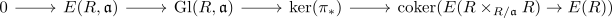

relative K1-Group as kernel
Proposition
Let $R$ be a ring, $\mathfrak{a} \subseteq R$ an ideal Then the relative K1-Group is given by
\begin{align*}
K_1(R,\mathfrak{a}) \cong \mathrm{ker}(\pi_*: K_1(R \times_{R/\mathfrak{a}} R) \rightarrow K_1(R))
\end{align*}
Proof
follows from the snake lemma for

where we get (after identification of the first two kernels with the $\mathrm{Gl}(R,\mathfrak{a})$ and $\mathrm{E}(R, \mathfrak{a})$) the exact sequence

hence it suffices to show that the map
\begin{align*}
E(R \times_{R / \mathfrak{a}} R) \rightarrow E(R)
\end{align*}
is an epimorphism, since
\begin{align*}
K_1(R, \mathfrak{a}) = \mathrm{coker}(E(R,\mathfrak{a}) \rightarrow \mathrm{Gl}(R,\mathfrak{a}))
\end{align*}
It is surjective as we may lift any generator $e_{i,j}(r)$ to $e_{i,j}((r,r))$